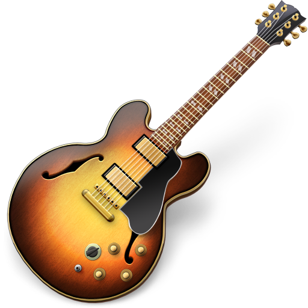

Мой Справочник | WEB-DESIGN | Изображения
Изображение должно правильно передавать ЭМОЦИИ в соответствии с тематикой сайта
Где искать изображения для moodboard:
- Google - Картинки
- Яндекс.Картинки
- behance.net
- pinterest.com
- onepagelove.com
- dribbble.com
- siteinspire.com
- freeimages.com
- splitshire.com
- pexels.com
Где искать изображения для макета:
Платные:
Вес картинок
- Логотипы: 0-20 KB;
- Фотографии: 70-300 KB;
- Используйте подходящий графический формат. Для больших фотографий — это JPEG
- PNG - если нужна прозрачность
- Не растрировать шрифты и png(должно быть в смарт-объекте)
Хороший тон: если картинка достаточно большая или во всю ширину блока, то всё текстовое опсинание должно распологаться ПОД НЕЙ, а не над ней!
Правильное расположение изображений
-
Картинка сверху, описание под ней
-
Взгляд должен быть на текст
-
"Правая подмышка" - хорошо

-
"Левая подмышка" - плохо (взляд прыгает)

-
Правильный порядок
-
Плитка (так можно)
В таком случае текст не должен уходить сильно вниз, должен ограничиваться картинкой (нужно ограничивать вывод текста, если он длинный)

-
Не должно быть строгой сетки для изображений - должны быть АКЦЕНТЫ (как вариант изображение товара, который чаще покупают, должно быть больше)
| Формат | Описания | Достоинства | Недостатки |
|---|---|---|---|
| JPEG | 1991 г. Самый распространнённый формат, подходящий для ФОТОГРАФИЙ, различных изображений, которым нужна полноцветность, но не нужна прозрачность. |
|
|
| Можно иммитировать прозрачность делая цвет фона у JPEG такой же как в контейнере | |||
| GIF | 1986 г. Формат для анимаций и мелкой графики, не требующих высокого качества |
|
|
| PNG-8 | 1996 г. Напоминает GIF. Используется для мелкой неполноцветной графики как альтернатива GIF |
|
|
| PNG-24 | Самый лучший и современный формат изображений. Используется для всех полноцветных изображений, которым нужна прозрачность или полупрозрачность, отсутствие изображений, для спрайтов |
|
|
| SVG |
Векторное изображение (Рисунки создаются математическими уравнениями, а не точками как в растровой графике) |
|
|
GIF-анимация (6556 KB)

GIF (51 KB)
JPEG (68 KB)

PNG (207 KB)
SVG (96 KB)